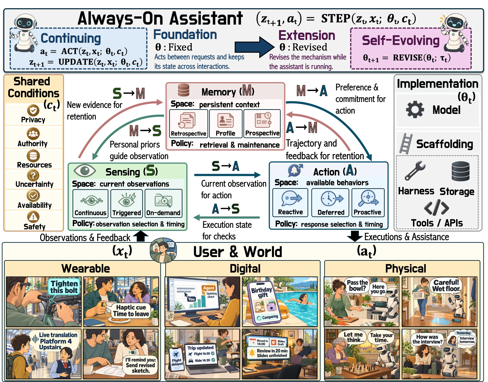

Property 1
Operational continuity
The ability to keep operating between explicit requests and to decide when to act or wait.
πiθt(· ∣ Ii,t; ct) selects an operation at every t ∈ 𝒯, ℛ ⊊ 𝒯
Survey and roadmap
A Roadmap Towards Continuing, Self-Evolving Loops
1S-Lab, NTU 2UC Berkeley 3Princeton 4Stanford 5NUS 6KAUST 7Dartmouth 8UNC Chapel Hill 9Northwestern
†Project lead ‡Equal mentorship ◇Advisory committee ✉Corresponding author
1. Overview
To remain always-on, personal intelligence needs a continuing loop that sustains assistance between requests, retains personal context and carries unfinished commitments forward. To grow more personal over time, this loop can also become self-evolving, revising how it works based on past experience.
Sensing, Memory and Action, linked by six directed channels that pass information between them, work under shared limits such as battery life, privacy and user permissions, and run on models and the scaffolding around them.
§2 · FrameworkExisting systems mapped onto the framework and compared by how much of the loop they close, in levels from L0 to L5. Of the six channels, M→S and A→M are the hardest, and so the priorities for reliable operation and self-evolution.
§6 · LevelsIn read mode, three oversight agents read each system’s paper and code, and a majority vote decides which channels and evidence steps it reports. In run mode, executable systems run with channels or evidence steps blocked, singly or together, to see how their behavior changes.
§7 · HALO
2. Main takeaways
Twelve takeaways in the order of the paper. Each card opens to show the reasoning and the evidence behind it.
01§2 · Definition
Either alone is common: memory agents only answer requests, and proactive agents act only within one session.
Why
An always-on assistant needs two properties. It decides by itself whether and when to act, without waiting for a request (operational continuity), and it keeps personal state, like preferences and pending tasks, across interactions (state durability). A loop of sensing, remembering and acting that keeps running between requests provides both.
Evidence
Each property alone is common. MemGPT remembers the user across sessions but only answers requests, and VideoLLM-online comments on a live video without being asked but only within one session.
Paper §2.1
02§2 · Self-evolution
The evidence runs from record to later use. Of 40 works, 5 state a revision and 4 its later use.
Why
To serve the user better, the assistant can change how it works (a rule, a prompt or its model weights) from its own trace and the user’s feedback, while it keeps running. Storing that the user prefers reminders at their workstation only updates its state. Editing the timing rule to wait until they are back there changes how it works.
Evidence
A claim needs five steps: the assistant recorded what it did, observed the outcome, linked it to the decision behind it, changed the rule, and used the new rule later. Of the 40 works that HALO read, 24 state the first step, 5 a revision and only 4 the later use.
Paper §2.1.2
03§2 · Framework
A dismissed reminder can trace back to the timing rule, a wrong stored time, or a task the user already finished.
Why
Sensing observes, Memory keeps what later decisions need, and Action decides whether, when and how to help. Six channels carry information between them, for example from Memory to Sensing about where to look next. Shared limits on privacy, permissions and budgets apply to all three.
Evidence
Tracing these flows shows where a failure starts, and the cause can sit in another module. A dismissed reminder could mean the timing rule is wrong, the stored meeting time is wrong, or the user already finished the task, and each calls for a different fix.
Paper §2.2–2.4
04§3 · Sensing
Power limits keep wearables at low frame rates, yet 40.6% of annotated kitchen actions last under a second.
Why
Missing an event can do more harm than misreading it. The assistant does not know what it missed, so nothing prompts it to correct its state or the way it senses. Most evaluations test recognition or timing on prerecorded video and do not count what was missed.
Evidence
Power limits keep always-on wearables at low frame rates. In HD-EPIC’s kitchen videos, 40.6% of actions last under a second, so at one frame per second they can fall entirely between frames.
Paper §3.5
05§4 · Memory
We call this the memory trap, and no reviewed always-on system yet shows lasting protection against it.
Why
A wrong record can be reused before the user notices, so a correction has to reach every summary and pending task built on it. A faulty memory can also bias how later feedback is read, so each revision keeps or even amplifies the error. The paper calls this a memory trap.
Evidence
Methods that flag outdated records, like STALE, act only once new evidence arrives, so a belief that turns wrong without notice keeps being reused. No reviewed always-on system yet shows lasting protection against the memory trap.
Paper §4.4.3, §4.5
06§5 · Action
In a six-week trial, suggestions raised step counts most at the start, and the effect then shrank.
Why
A message saying that an action was sent does not show that it worked, and the real outcome often comes late or not at all. Promised tasks must outlast the session that created them, and a reminder that helps today can become a nuisance when it is repeated.
Evidence
In the six-week HeartSteps trial, activity suggestions raised step counts most at the start, and the effect shrank over time. In LIMBO, leading models repeat a write in most episodes when a request is still in flight or arrives twice.
Paper §5.5
07Main finding · §3–5
Of 40 works, only 17 let memory guide observation, and only 15 of the 25 that store their actions keep the outcomes.
Why
Assistants seldom use what they remember to decide what to observe next, and when they do, an outdated memory can keep them from the evidence that would correct it. Many record their actions, but fewer keep how those actions turned out. Keeping sensing open to unexpected change and linking each outcome to the decision behind it are the two research priorities.
Evidence
Of the 40 works in HALO’s read table, 37 report memory guiding action (M→A) but only 17 report memory guiding observation (M→S). Of the same 40, 25 pass action records back to memory (A→M), and only 15 of them also keep the outcomes.
Paper §3.4.2, §4.4.3, §7.1
08§6 · Applications
A confidential meeting may be heard but not stored or repeated, and no reported system controls all three modules.
Why
On smart glasses, what is captured now limits what can be recalled later. In digital assistance, background checks compete with replies for the same computation. In physical assistance, a wrong action costs more, and judging whether help worked needs Memory to keep the user’s response.
Evidence
A shared limit must hold in all three modules at once. In a confidential meeting, Sensing may process other people’s speech, but Memory must not keep it and Action must not pass it on. No reported system controls all three.
Paper §6.1, §6.2
09§6.3 · Levels
Of 119 placed systems, 67 decide when to act, 34 tie outcomes to decisions, and 5 keep every change within the user’s limits.
Why
Recording in the background or running on a schedule can look always-on, yet such assistants still wait for a request or act only as set. Fewer decide for themselves when to act, and fewer still check how it turned out.
Evidence
Of the 119 systems placed, 52 are not yet always-on (L0 to L2). Of the 67 that decide when to act, 34 link an outcome to the decision behind it, mostly through explicit replies like ratings or dismissals. Only 5 research works keep every change within the user’s limits (L5), each under a stated condition.
Paper §6.3
10§6.4 · Revision
Tasks promised under the old rule are still pending, and no reported system shows in full how a changed rule performs later.
Why
A running assistant cannot try a change cheaply. Tasks promised under the old rule are still pending, and a revised rule also changes what the assistant observes next.
Evidence
No reported system revises when or what it observes. Most revisions learn from ratings, edits, or dismissals, and only the mobile-health trials learn from delayed outcomes. None shows in full what happens to commitments made under the old rule, or whether later assistance improves.
Paper §6.4
11§7 · HALO
Three reviewers vote on 40 works. Cutting one path can leave behavior unchanged, so channels are cut alone and together.
Why
In read mode, three language-model reviewers read the paper or blog and any released code of 40 works, and vote on which channels and evidence steps each one reports. In run mode, HALO reruns executable systems with a channel or step removed and compares the behavior.
Evidence
No work that reports all channels also revises how it works, so the two are judged apart. In the smart-glasses assistant AiGet, the user profile reaches the suggestions by two paths: removing it from one prompt left no clear preference, and only removing it from both made the judge prefer the original. In the email assistant EAIA, withholding feedback or not storing revisions made all three models drop the required sign-off from new emails.
Paper §7
12§8 · Goal
15 open problems in four groups stand between today’s assistants and this goal.
Why
The user sets only the loop’s direction and limits. The assistant decides when to act, revises how it works, and asks for confirmation whenever an action needs the user’s permission.
Evidence
Reaching it means solving 15 open problems in four groups: keeping the loop running between requests (5), protecting authority, privacy and safety while the user is away (4), checking self-evolution and keeping it within the user’s limits (4), and evaluating assistants over months of real use (2).
Paper §8
3. Definitions and foundations
Always-on personal intelligence is personal assistance that maintains two core properties for the same user: operational continuity and state durability. Its foundation is the continuing loop, the recurring operation of Sensing, Memory, and Action that provides both properties. Building on it, the long-term goal is a self-evolving loop, in which the assistant revises how it works based on operating experience to serve the user better.

Continuing loopthe foundation · mechanism θ fixed
Property 1
The ability to keep operating between explicit requests and to decide when to act or wait.
πiθt(· ∣ Ii,t; ct) selects an operation at every t ∈ 𝒯, ℛ ⊊ 𝒯
Property 2
The ability to preserve user-specific state for later use and to carry unresolved commitments across interaction boundaries.
zt+1 = UPDATE(zt, xt; θt), t ∈ ℬ
Self-evolving loopan extension · mechanism θ revised
Extension
A continuing loop can retain information while its mechanism stays fixed. A self-evolving extension uses operating experience to make durable revisions to this mechanism, which later steps then use.
θt+1 = REVISE(θt; τt)
The user steers the loop instead of running it, setting only its direction and boundaries, while the assistant decides when to act, revises how it works, and asks for confirmation whenever an action needs authorization from the user.
Several kinds of agent are close to always-on personal intelligence and easy to confuse with it. Choose the properties an agent has, and the table keeps the kinds that fit.
Each module has a space, which defines what it can do and represent, and a local policy that decides what to use from this space.
5. Applications and bottlenecks
We examine how Sensing, Memory, and Action work together in wearable, digital, and physical applications, and distinguish these applications by three coordinates: the interaction domain, the participant scope, and the outcome horizon. The systems below decide for themselves when to act between requests or carry state across interactions, grouped by interaction domain.
6. Levels of loop closure
7. Harness for Always-On Loop Oversight
HALO assesses the loop completeness of existing systems. Read mode reviews a work’s papers and released code, much like a code review. Run mode runs its code on fixed inputs with channels or evidence steps removed, much like an A/B test.
8. Trends and open problems
Sections 3 to 7 show where current always-on systems fall short, and this section states the resulting gaps as 15 open problems in four parts. The first three follow the framework from running the loop to revising it, and the fourth asks how to evaluate all of this over months of real use. Open a problem to see why it remains open, the question it poses, and the paper’s directions.
APart A · §8.1 · 5 problems
How can an assistant decide what to observe, what to believe, and when to act when no one is asking, while pending commitments share one budget?
A request-driven agent looks only where the user points, whereas an always-on assistant relies on its own memory to decide when and where to look between requests. Yet if a stored belief goes stale, it can steer sensors away from the very place where a silent change just happened.
What keeps memory-guided sensing from blinding the assistant to unannounced changes, and how can the assistant account for the stretches of time it chose not to observe?
Directions
People rarely announce that their habits have changed, so the assistant simply observes a deviation, such as a morning briefing skipped for two weeks during a business trip.
When a user silently breaks a routine between requests, how does an always-on assistant tell a lasting change from a temporary exception? And once it updates that belief, what ensures the correction reaches every summary and pending task built on the old value?
Directions
Unlike a single-session task, an always-on commitment can sit waiting for days while the target event moves, the assistant restarts, or the user quietly finishes the job on their own.
Once a commitment outlives the conversation that created it, what prevents a restart or schedule change from dropping or duplicating the action, and how does the assistant close a commitment whose completion leaves no observable trace?
Directions
Every unprompted message spends the user’s attention immediately, whereas the cost of staying silent may surface only days later as a missed deadline. Moreover, suggestions that help in week one can turn into annoying noise by week six.
In unprompted interactions, how does an always-on assistant weigh immediate interruption cost against delayed benefit as user fatigue builds up over weeks?
Directions
A single-task agent spends the whole device budget on the active request, but an always-on assistant juggles multiple pending commitments that all compete for the same battery, computation, and sensors.
When multiple background commitments compete for one observation budget, which checks take priority? And if a backup check, such as reading a task log, covers for a skipped sensor check, how can the assistant detect that both rely on the same revocable account or permission?
Directions
BPart B · §8.2 · 4 problems
What has the user authorized, where does the assistant run, whose information does it hold, and how can people check what it does when no one is watching?
In a turn-based chat, the user is present whenever a permission is used, whereas in a continuing loop, a permission granted once keeps authorizing actions the assistant initiates days later while the user is away.
When a user narrows or revokes a standing permission, what ensures the change immediately halts every scheduled check, queued action, and delegated tool, and which background actions must still pause and wait for fresh human sign-off?
Directions
Running an always-on assistant in the cloud keeps it alive when the user’s devices are off, while running it locally keeps data on-device and lowers latency. Either way, a code sandbox cannot stop an assistant from misusing a legitimate account it was granted, nor does killing the process undo emails already sent.
Where should each part of the continuing loop run, and what catches or reverses an unauthorized external action when code sandboxes and stop buttons cannot?
Directions
An always-on assistant can capture bystanders who never consented to recording, and a fact captured privately today can be surfaced days later in front of a different audience.
What prevents an always-on assistant from leaking information captured in one context to a new audience days later, and how can deleting a source record purge every summary, cache, and learned routine derived from it?
Directions
While the user is away for days, untrusted emails or web pages can plant instructions that enter Memory and steer later actions, yet the user only has time to read a brief summary of what happened.
When an assistant operates unattended for days, how can a brief summary expose every high-risk or externally influenced action without overwhelming the user, backed by audit logs and safety checks that the assistant itself cannot edit?
Directions
CPart C · §8.3 · 4 problems
How can an assistant learn from implicit, delayed outcomes, show that a revision helped, and keep revisions, including revisions of the revision procedure, within the user’s bounds?
In daily use, feedback rarely names the decision it concerns: a dismissed reminder could mean the timing rule is flawed, the stored meeting time was wrong, or the user already finished the task. Staying silent leaves even less trace, because an unsent reminder draws no reply.
When feedback arrives hours later, or never arrives because the assistant stayed silent, how does a self-evolving loop attribute the outcome to the right earlier decision and tell whether to fix a stale memory record or rewrite a decision rule?
Directions
Offline agents can replay the same benchmark before and after an update, but revising a live assistant changes what it observes and records in the user’s subsequent days.
Because a live revision alters the future observations used to judge it, what evidence proves that a new mechanism genuinely improved assistance without degrading existing perception skills or breaking commitments made under the old rule?
Directions
Left unchecked, a self-evolving assistant can generalize a narrow permission, such as sharing one work calendar, into a general rule that shares private calendars too, or even rewrite the file that lists which actions require approval.
What stops a self-evolving loop from drifting beyond the permissions under which a rule was learned, and where is the line between routine revisions that can run within preset bounds and scope-widening revisions that require human approval?
Directions
Recursive self-improvement modifies not only the assistant’s mechanism, but also the proposer and verifier that generate and check future revisions.
If a recursive loop can rewrite its own verifier, what anchors the safety, privacy, and authority checks so the assistant cannot weaken the very tests that govern it? Under slow human feedback that cannot be replayed, what criterion tells the search when to stop?
Directions
DPart D · §8.4 · 2 problems
How can we evaluate an assistant whose decisions shape its later inputs, and show over months that it helps the user more than it burdens them?
Replaying recorded logs tests how two versions react to the exact same past inputs, but in real deployment, each version’s actions change what the user does next and which events the sensors capture.
Once an assistant’s decisions actively reshape its future inputs, how can we fairly compare two evolving versions in closed-loop deployment, and what independent ground-truth records are needed to reveal the events and side effects the assistant itself missed?
Directions
Short-term benchmarks reward immediate task completion, yet over months of real use, initial helpfulness can fade while interruptions, confirmation fatigue, and subtle privacy or permission leaks quietly accumulate.
After months of daily use, how do we measure whether the assistant’s ongoing help still outweighs the trouble it causes? And what checks verify that privacy and permissions have not quietly slipped over time?
Directions
9. Works in the survey
Every work in the survey’s tables, from smart glasses to home robots. Search them below, or pick one off the wall.
It keeps two properties for the same user. Operational continuity is the ability to keep operating between explicit requests and to decide when to act or wait. State durability is the ability to preserve user-specific state for later use and to carry unresolved commitments across interaction boundaries. Each property alone is common, so an assistant needs both.
Each level keeps the capabilities of the level below and adds one more, from L0, which keeps nothing across interactions, to L5, which revises its mechanism only within the limits set by the user and the world. L3 is the first always-on level, because the assistant begins to decide for itself whether or when to act without a request. Each system is placed at the highest level that its reported evidence supports, so a placement is a lower bound.
A continuing loop can retain information while its mechanism stays fixed. A self-evolving assistant uses operating experience to make durable revisions to this mechanism, which later steps then use. To count one, the survey looks for a chain of evidence: a record, an outcome, its attribution, the revision, and the later use of the revised mechanism.
HALO assesses the loop completeness of existing systems. Read mode reviews a work’s papers and released code, much like a code review: three agents read the sources, and a majority vote decides each cell. Run mode runs its code on fixed inputs with channels or evidence steps removed, much like an A/B test.
Open an issue or a pull request on the reading list. It follows the survey’s sections and is updated as new work appears.
10. BibTeX
@article{alwayson2026roadmap,
title = {Always-On Personal Intelligence: A Roadmap Towards
Continuing, Self-Evolving Loops},
author = {Liu, Shuai and Guo, Hongming and Jin, Weiyang and Hu, Kairui and
Tian, Shulin and Dong, Yuhao and Wu, Jinming and Zhang, Kaichen and
Tang, Yujin and Han, Xinyang and Chai, Wenhao and Fu, Yuqian and
Zhang, Ce and Zhang, Yuanhan and Kong, Lingdong and Siyao, Li and
Yang, Jingkang and Bertasius, Gedas and Li, Manling and Wu, Jiajun and
Wang, Mengdi and Song, Dawn and Liu, Ziwei},
journal = {Preprints},
year = {2026},
doi = {10.20944/preprints202611.0793.v1},
url = {https://doi.org/10.20944/preprints202611.0793.v1}
}